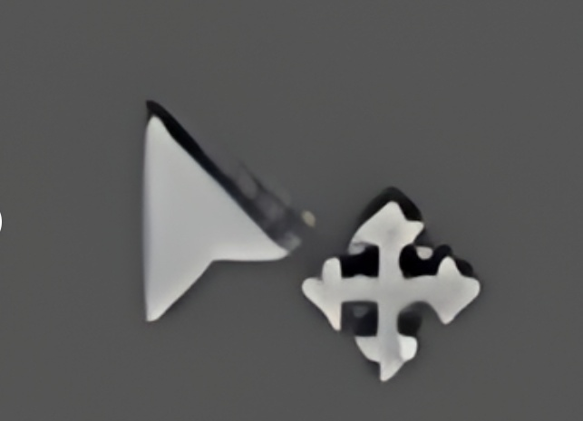
Move Tool
Shortcut: V- Definition / Main Function
- Moves the selected layer or selection to a new position.
- How to Use
- Select a layer in the Layers panel, choose the tool, then drag on the canvas.
Photoshop Tools Guide
Explore Photoshop tools arranged into five practical groups, with their main functions and beginner-friendly instructions.
Category A
Select, move, crop, and sample parts of an image.

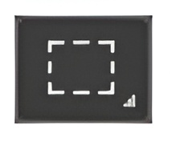
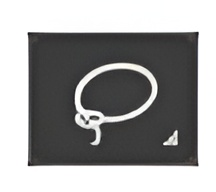
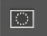
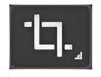
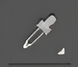
Category B
Repair photos, paint, erase, blend colors, and adjust light.
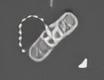
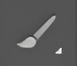
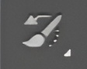
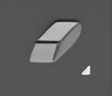
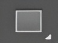
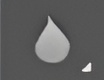
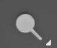
Category C
Draw paths and shapes, and add text.
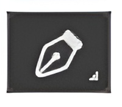
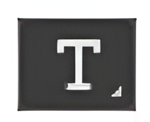
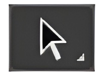
Category D
Move around the canvas and change how closely you view it.
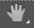
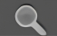
Category E
Four grouped controls found at the bottom of the toolbar.
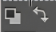
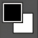
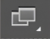